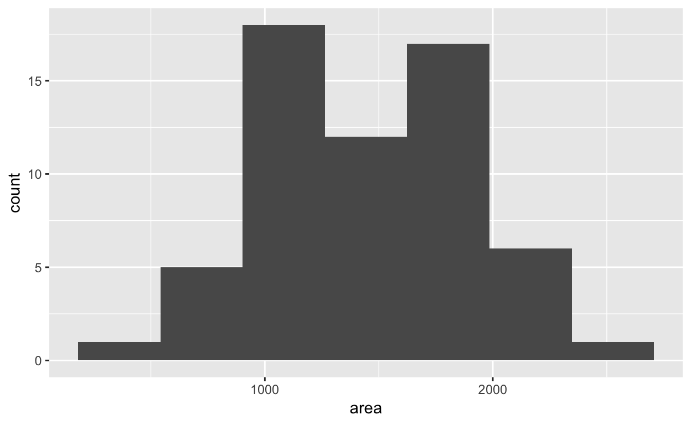

If you have access to data on an entire population, say the size of every house in Ames, Iowa, it’s straight forward to answer questions like, “How big is the typical house in Ames?” and “How much variation is there in sizes of houses?”. If you have access to only a sample of the population, as is often the case, the task becomes more complicated. What is your best guess for the typical size if you only know the sizes of several dozen houses? This sort of situation requires that you use your sample to make inference on what your population looks like.
In the previous lab, “Sampling Distributions”, we looked at the population data of houses from Ames, Iowa. Let’s start by loading that data set.
download.file("http://www.openintro.org/stat/data/ames.RData", destfile = "ames.RData")
load("ames.RData")In this lab we’ll start with a simple random sample of size 60 from the population. Note that the data set has information on many housing variables, but for the first portion of the lab we’ll focus on the size of the house, represented by the variable Gr.Liv.Area.
samp <- data.frame(area = sample(ames$Gr.Liv.Area, 60))Describe the distribution of your sample. What would you say is the “typical” size within your sample? Also state precisely what you interpreted “typical” to mean.
set.seed(19053)
samp <- data.frame(area = sample(ames$Gr.Liv.Area, 60))summary(samp$area)## Min. 1st Qu. Median Mean 3rd Qu. Max.
## 334 1036 1488 1440 1776 2500ggplot(samp, aes(x = area)) + geom_histogram(bins = 7)
# the distribution of the sample looks symmetric
# the typical size is around 1440 square feet
# a measure for "typical value" would be the sample mean for a symmetric
# distributionOne of the most common ways to describe the typical or central value of a distribution is to use the mean. In this case we can calculate the mean of the sample using,
(sample_mean <- mean(samp$area))## [1] 1439.583Return for a moment to the question that first motivated this lab: based on this sample, what can we infer about the population? Based only on this single sample, the best estimate of the average living area of houses sold in Ames would be the sample mean, usually denoted as \(\bar{x}\) (here we’re calling it sample_mean). That serves as a good point estimate but it would be useful to also communicate how uncertain we are of that estimate. This can be captured by using a confidence interval.
We can calculate a 95% confidence interval for a sample mean by adding and subtracting 1.96 standard errors to the point estimate (See Section 4.2.3 if you are unfamiliar with this formula).
se <- sd(samp$area) / sqrt(60)
lower <- sample_mean - 1.96 * se
upper <- sample_mean + 1.96 * se
c(lower, upper)## [1] 1321.867 1557.300This is an important inference that we’ve just made: even though we don’t know what the full population looks like, we’re 95% confident that the true average size of houses in Ames lies between the values 1321.8670892 and 1557.2995774. There are a few conditions that must be met for this interval to be valid.
For the confidence interval to be valid, the sample mean must be normally distributed and have standard error \(s / \sqrt{n}\).
In this case we have the luxury of knowing the true population mean since we have data on the entire population. This value can be calculated using the following command:
mean(ames$Gr.Liv.Area)## [1] 1499.69Does your confidence interval capture the true average size of houses in Ames? Use <= and & to check if the population mean is covered by you confidence interval.
set.seed(19053)
samp <- data.frame(area = sample(ames$Gr.Liv.Area, 60))
se <- sd(samp$area) / sqrt(60)
lower <- sample_mean - 1.96 * se
upper <- sample_mean + 1.96 * selower <= mean(ames$Gr.Liv.Area) & mean(ames$Gr.Liv.Area <= upper)## [1] TRUEUsing R, we’re going to recreate many samples to learn more about how sample means and confidence intervals vary from one sample to another. The infer package comes in handy here.
Here is the rough outline:
The 50 samples are created with the re_sample_n() function from the infer package. In the next step we apply the group_by() function from the dplyr package. After that, each step is done seperately for each of the 50 samples. With summarise() we can then compute the lower and upper bounds.
library(infer)
library(tidyverse)
n <- 60
ci_50 <- ames %>%
select(Gr.Liv.Area) %>%
rep_sample_n(size = 60, reps = 50) %>%
group_by(replicate) %>%
summarise(lower = mean(Gr.Liv.Area) - 1.96 * sd(Gr.Liv.Area) / sqrt(n),
upper = mean(Gr.Liv.Area) + 1.96 * sd(Gr.Liv.Area) / sqrt(n),
)Lower bounds of these 50 confidence intervals are stored in the variable lower, and the upper bounds are in the variable upper. Let’s view the first interval.
c(ci_50$lower[1], ci_50$upper[1])## [1] 1290.187 1516.813Using the following function (which was downloaded with the data set), plot all intervals. What proportion of your confidence intervals include the true population mean? Is this proportion exactly equal to the confidence level? If not, explain why.
plot_ci(ci_50$lower, ci_50$upper, mean(ames$Gr.Liv.Area))Pick a confidence level of your choosing, provided it is not 95%. Calculate 50 confidence intervals at the chosen confidence level. You do not need to obtain new samples, simply calculate new intervals based on the sample means and standard deviations you have already collected. Using the plot_ci function, plot all intervals and calculate the proportion of intervals that include the true population mean. How does this percentage compare to the confidence level selected for the intervals?
This tutorial is released under a Creative Commons Attribution-ShareAlike 3.0 Unported. This lab was adapted from an OpenIntro R Lab by Andrew Bray and Mine Çetinkaya-Rundel.